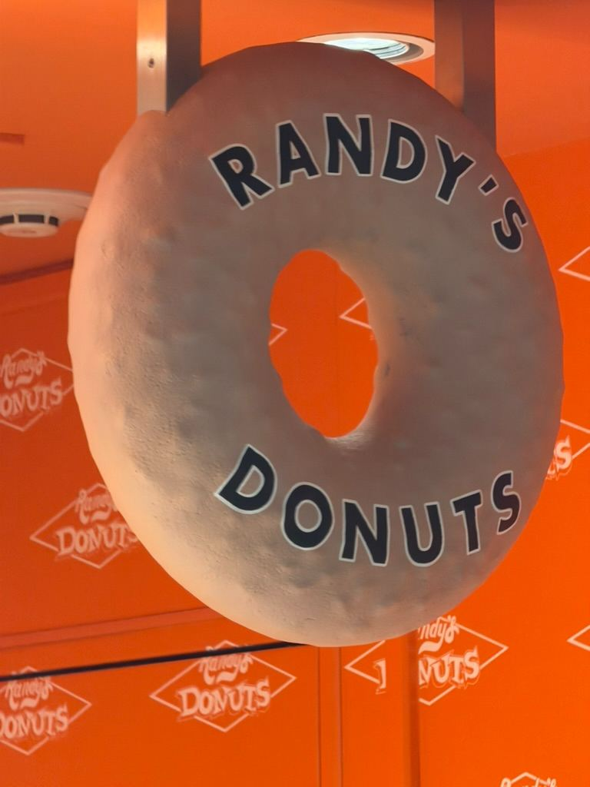
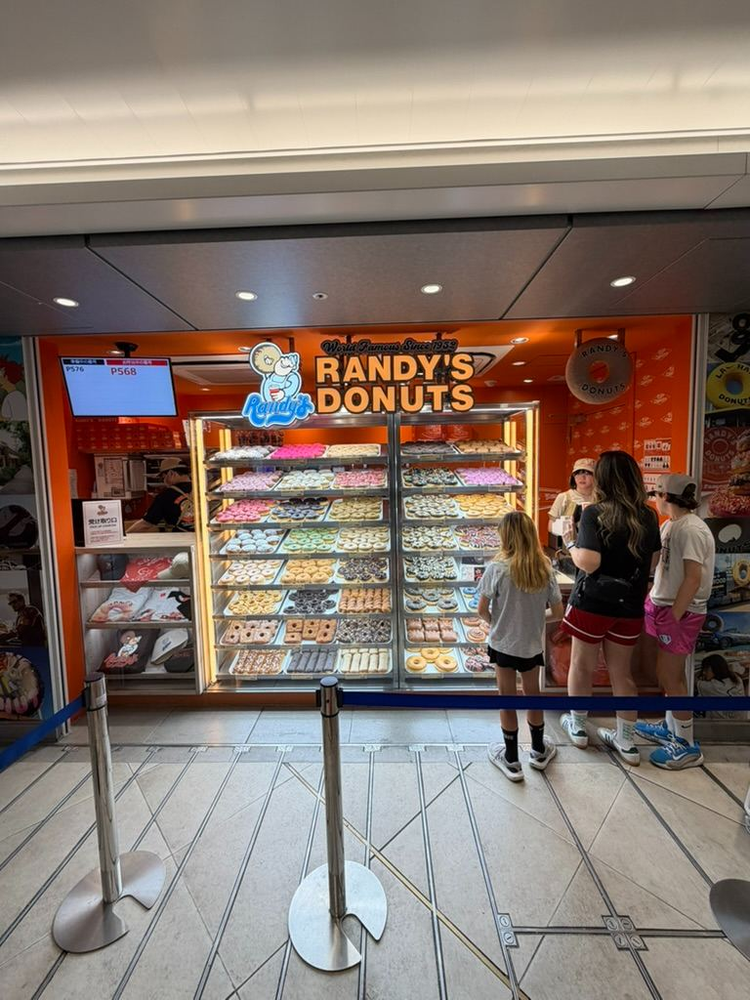
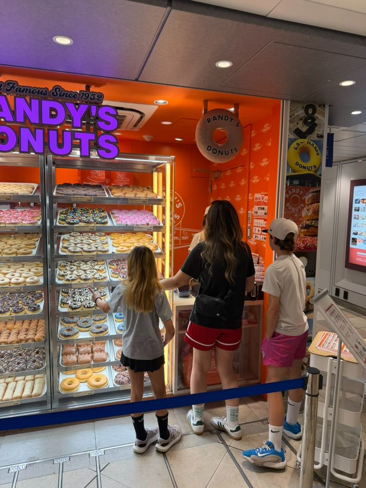
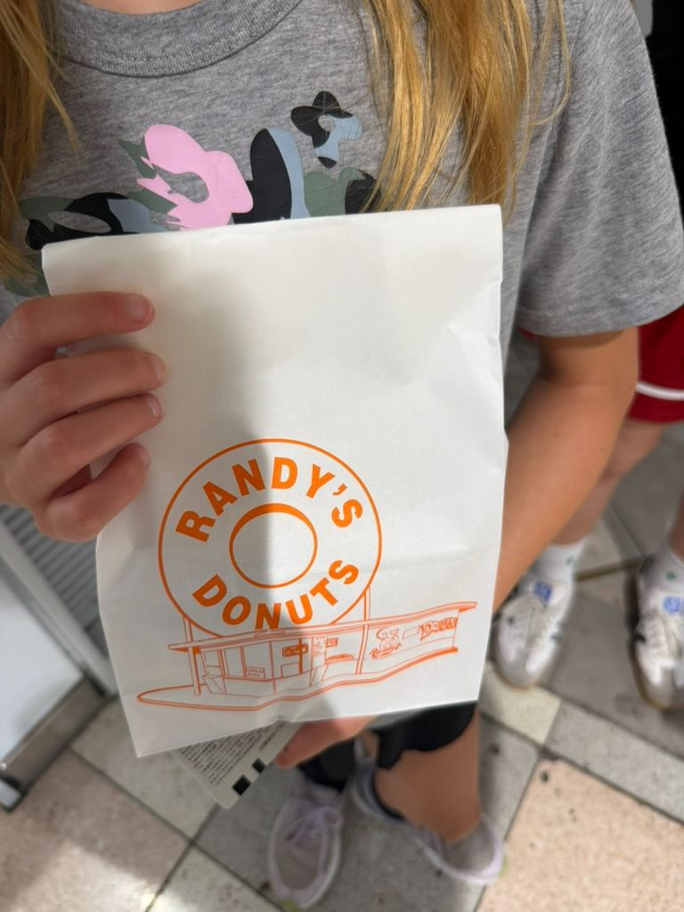
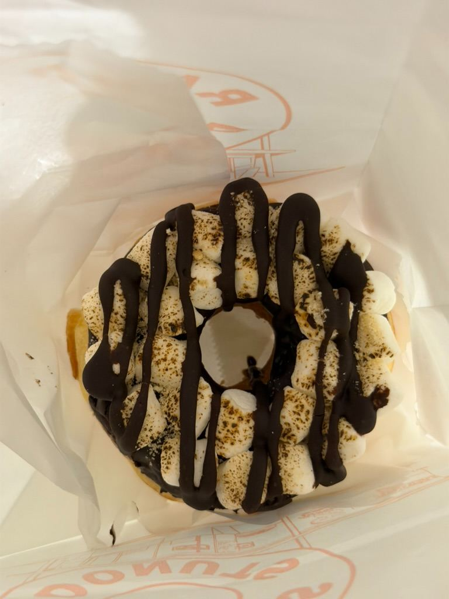
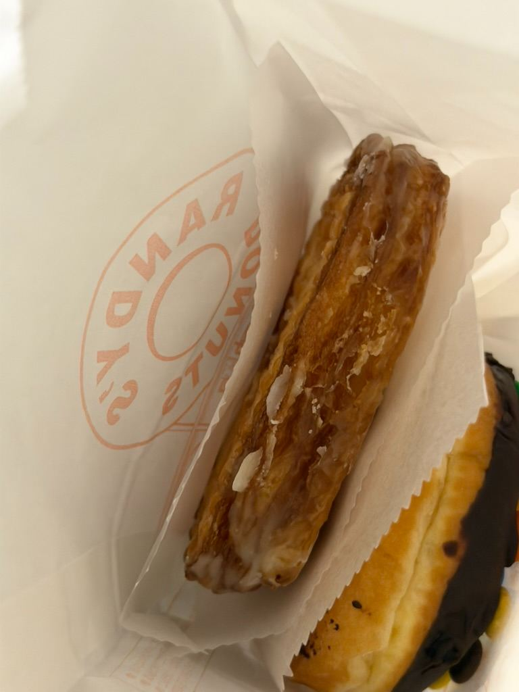

A Taste of LA in Tokyo: Trying Randy’s Donuts!🍩✨






There’s nothing quite like a little taste of home when you’re traveling abroad, and our latest family adventure brought us right to a iconic classic: **Randy’s Donuts**!
Known for its world-famous giant rooftop donut sign in Los Angeles, Randy’s has brought its famous recipe and bright orange aesthetic all the way to Japan. Seeing the vibrant shop, signature giant hanging donut, and massive display cases stacked high with rows of colorful treats instantly made us feel like we were back in Southern California.
Standing in front of the display was a tough decision—there were dozens of options to choose from! After a quick family debate in line, everyone picked out their favorite treat:
* **S'mores Donut:** A fluffy base topped with rich chocolate drizzle, toasted marshmallows, and graham cracker crumbs.
* **Glazed Bear Claw / Twist:** Golden, flaky, and coated in just the right amount of sweet glaze.
* **Candy & Sprinkles:** Cheerful, chocolate-frosted donuts loaded with colorful M&M-style candies and bright pink frosting.
Sipping coffee, holding our classic white Randy’s paper bags, and indulging in these giant, soft donuts was the perfect sweet pitstop. It’s amazing how food can bridge the distance between two places and bring back so many great memories.
If you ever spot a Randy’s Donuts while exploring, definitely grab a bag to share—it's sweet, delicious, and totally worth the stop! 🍩✨